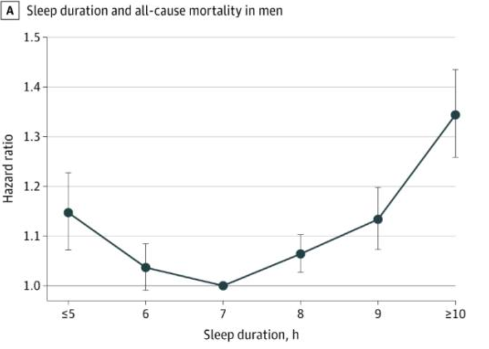

程序员延寿指南
目录
晴天需要保证每天至少10min光照，调节褪黑素分泌。 BMI需要小于22
1.术语
- ACM: All-Cause Mortality / 全因死亡率
2.目标
- 稳健的活得更久
3.分析
- 主要参考：对ACM的学术文献相对较多，可以作为主要参考
- 增加寿命与ACM关系非线性：显然增加寿命与ACM关系是非线性函数，这里假设
ΔLifeSpan=(1/(1+ΔACM)-1)*10（ΔACM为ACM变化值；公式欢迎优化） - 变量无法简单叠加：显然各个变量之间并不符合独立同分布假设，变量之间的实际影响也并不明确
- 存在矛盾观点：所有的证据都有文献/研究对应，但注意到：有些文献之间有显著矛盾的观点（如对于碳水摄入比例的矛盾）；有些文献存在较大争议（如认为22点前睡觉会提升43%全因死亡率）
- 研究仅表达相关：所有文献表明的更多是相关而非因果，在阅读时要考虑文献是否充分证明了因果 —— 如某文献表明了日均>=7000步的人有显著低的全因死亡率。但步数少的人可能包含更多长期病患，如果没有合理的排除这块数据，那此文献调查失真
4.理论
- 输入
- 固体：吃白肉（-11%～-3% ACM）、蔬果为主（-26%～-17% ACM），多吃辣（-23% ACM），多吃坚果（-27%～-4% ACM），中量碳水、多吃植物蛋白（-10% ACM），少吃超加工食物（-62%～-18%）
- 液体：喝咖啡（-22%～-12% ACM），喝牛奶（-17%～-10% ACM），喝茶（-15%～-8% ACM），少喝或不喝甜味饮料（否则每天一杯+7% ACM，+多巴胺），戒酒（否则+～50% ACM，无上限）
- 气体：不吸烟（否则+～50% ACM，-12～-11年寿命）
- 光照：晒太阳（-～40% ACM）
- 药物：二甲双胍（糖尿病人相比正常人可以+3年）、复合维生素（-8%癌症风险）、亚精胺（-60%～-30% ACM）、葡萄糖胺（-39% ACM）
- 输出
- 运动：每周3次45分钟挥拍运动（-47% ACM）
- 日常：刷牙（-25% ACM）
- 睡眠：每天睡7小时全因死亡率最低；且22-24点间最好，早睡+43% ACM，晚睡+15% ACM（存在争议）
- 上下文
- 体重：减肥（-54% ACM）
5.实战
减肥：
对体重减轻的死亡率风险评估发现，体重从肥胖减轻到超重的成年人与稳定肥胖人群相比，全因死亡率降低了54％（危险比为0.46），然而从成年初期的超 重减轻到中年以前的正常体重的人群的死亡率风险并未降低（风险比为1.12）。
BMI建议： 18.5～24 （梨型身材 22～24，苹果型身材20～22） 杜绝腹部脂肪
运动：
每周 $\ge150$ min中等强度有氧运动（心率130～150次/min）
走路
分析结果表明，每日步数每增加 2000 步，过早死亡的风险就会随之降低 8%～11%，直到每天走 10000 步时达到基本饱和。
晒太阳
上午6:00到10:00之间，下午14:00-18:00之间，UVA的量比UVB要多。
当你的影子是你身高的2倍，甚至更多的时候，紫外线指数最安全，可以不需要任何防护，好好晒一晒。
当你的影子处于身高和身高的2倍之间长度时，安全晒太阳的时长可以控制在20分钟左右。
刷牙
经常不刷牙的人：癌症、慢性阻塞性肺病及肝硬化风险分别增加了9%、12%和25%，过早死亡风险增加25%。
睡眠
在男性中，最佳睡眠实际为7小时，睡眠持续时间≥10小时与全因死亡风险增加34%相关；
且22-24点间最好，早睡+43% ACM，晚睡+15% ACM（存在争议）